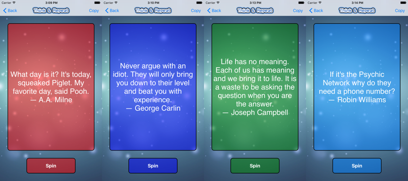

Vorige week kwam ons ter ore dat een van de Belgische leden van SwiftDev.nl zijn app Quote Spin naar de AppStore had gepubliceerd.
Voor iedere ontwikkelaar is dat een spannend moment. Of je app ook daadwerkelijk in de AppStore wordt geplaatst is dan afwachten. Maar het is gelukt! Hieronder het relaas van Pieter Velghe (CeraMo69) over het ontstaan van QuoteSpin. [Update: Pieter heeft QuoteSpin 1.3 in de App Store staan (zie hieronder voor nadere informatie)]
Na het grondig doorploegen van het eerste handboek van de iOSAcademie heb ik besloten wat praktische ervaring op te doen. Om daarmee een realistische kijk op mijn huidige Swift capaciteiten te krijgen en zo actief aan de slag te gaan met mijn hoofdzakelijk theoretische kennis van dat moment.
Aangezien ik zelf geregeld (vrij gepassioneerd) op zoek ben naar allerlei citaten (Quotes), leek dit mij een uitstekend beginidee om van hieruit mijn eerste eigen publieke project te bouwen. Ook heb ik bij mezelf gemerkt dat als ik naar citaten op zoek ga, dit vrij geregeld gepaard gaat met een bepaald perspectief/gevoel. Hieruit is het idee van categorie-elementen uiteindelijk ontstaan.
Ik had op zich nog weinig ervaring in het effectief opbouwen en afwerken van een app vanuit een eigen concept. Dit was als beginner zeer zeker een uitdaging. Door steeds gemotiveerd en enthousiast aan de slag te gaan heb ik doorgezet. Uiteindelijk ben ik vrij tevreden over het eindresultaat. De voldoening die je tijdens het opbouwen en het aanschouwen van je eigen vooruitgang krijgt is enorm. Het groeiende zelfvertrouwen in je eigen capaciteiten kan ik moeilijk verwoorden. Daarom is het zeker de moeite waard eens een plan van a tot b uit te voeren. Zo kun je zelf, na het opbouwen van wat theoretische kennis, ervaren wat dat in je zelf teweegbrengt.
Wat ik bij het ontwerp en de uitvoering van mijn idee ook goed in gedachte gehouden heb, is dat het vooral gericht moest worden op een vrij breed publiek, niet enkel op mensen met mijn persoonlijke smaak of visie.
Ook heb ik tijdens dit proces gestoten op ideeën waarvoor ik toen nog té weinig theoretische kennis bezat om deze effectief in de praktijk uit te voeren. Voor de uitwerking van deze ideeën heb ik nader onderzoek moeten doen door grondig na te lezen hoe het in elkaar zat. Dit heeft mijn theoretische kennis stapsgewijs verder vergroot. Wat ik in de afgelopen tijd gaandeweg geleerd heb, is binnen mijn eigen app concept ook daadwerkelijk toegepast.
Op het beginscherm kies je, vanuit je huidige of gewenste perspectief, één van de vier elementen of je kiest voor Random zodat Quote Spin voor jou door alle elementen heen een citaat kiest.
| Warm = Vuur (warmte) | Cold = Water (cold as ice) |
| Life = Aarde (iets diepzinniger) | Fresh = Lucht(ig) |
| Random = kan gezien worden als de 'Ruimte' waarin alle elementen zich bevinden. | |
Je draait (‘SPIN’) aan het rad naar keuze en krijgt een toepasselijk citaat voorgeschoteld.
Ik heb nog wat bijzondere extra’s toegevoegd: je kunt je bestaande citaat naar het klembord kopiëren zodat je deze op iedere gewenste bestemming kunt plakken. Op de info pagina bevindt zich een contact optie die een Mail naar mij opent. Zo kun je mij via deze Mail vanuit de app met nieuwe ideeën verrassen.
Quote Spin werkt als universele app op de iPad, iPhone en iPod Touch. De schermen passen zowel staand als liggend. De huidige versie is in het Engels en bevat nu meer dan 400 citaten. Ieder element bevat meer dan 100 citaten.
Hopelijk hebben jullie evenveel plezier tijdens het gebruik van Quote Spin als dat ik plezier heb gehad aan mijn groeiontwikkeling in Swift en het bouwen van deze app.
Je vindt deze inspiratie-opwekkende app in de App Store: Quote Spin. Je kunt hem daar gratis ophalen.
Update QuoteSpin 1.0 -> QuoteSpin 1.3 • Dat ondersteuning voor apps belangrijk is en de gebruikservaring en tevredenheid van gebruikers een essentiële rol spelen heeft Pieter aangezet tot kleine wijzigingen. Zo heeft hij de leesbaarheid aangepast. De iPhone- en iPod Touch versie werken alleen nog staand. Er is een Review knop toegevoegd die direct naar de QuoteSpin pagina in de App Store gaat. Op de info-pagina kun je contact met Pieter leggen via Mail en Facebook.